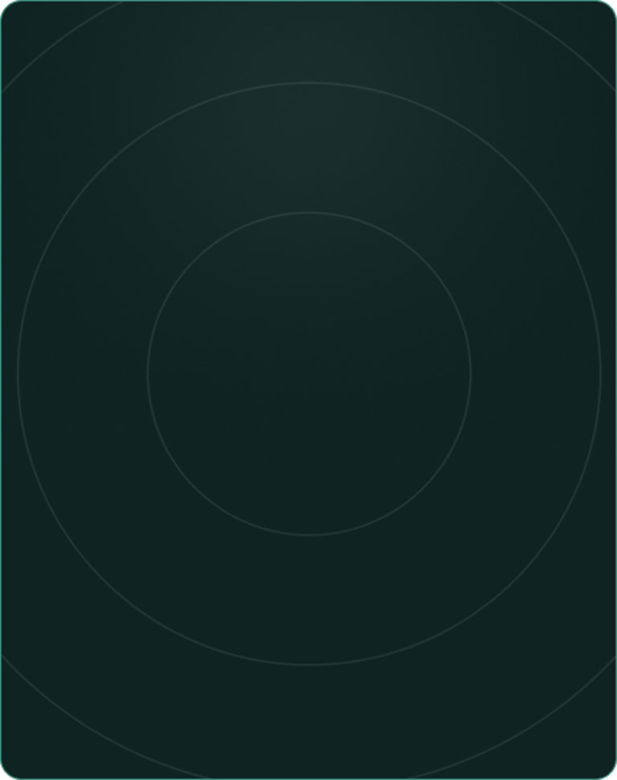

Método · ENEM
SOBRE
A Plataforma
Aqui, o estudo não gira em torno de conteúdo. Ele gira em torno da sua evolução.
A Plataforma foi construída para que você avance a partir do erro, da decisão e da prova — não da memorização aleatória.
Tudo funciona por fases de estudo, ajustadas à sua realidade em cada matéria: iniciante, intermediário ou avançado.
Você não está em uma única fase. Cada disciplina tem o seu ponto certo de avanço.
Estuda muito e sente que rende pouco, com uma constante sensação de estagnação e sem saber o que priorizar na rotina de estudos.
Resolve questões, mas não sabe como usar os erros pra evoluir. As revisões se tornam “inimigas”, quando deveriam ser suas aliadas.
Está cansado(a) de bater na trave, e percebeu que precisa de um plano de execução alinhado ao seu desempenho.
PÚBLICO
Para quem é?
Essa plataforma foi pensada para você que…
BÔNUS
Benefícios exclusivos
da pré-venda
Acesso antecipado + bônus liberados apenas na primeira turma:
Mentorias em Grupo
Participe de encontros exclusivos comigo no Google Meet, onde você poderá tirar dúvidas, aprender estratégias avançadas e receber insights valiosos para acelerar sua aprovação no ENEM!
Estratégias utilizadas pela Duda, para alcançar o 1 lugar no ENEM
Aqui você vai ver o “por trás” da aprovação: as estratégias, hábitos e escolhas que fizeram diferença, desde o planejamento até a forma de revisar e resolver questões.
Grupo no WhatsApp com Duda Farage
Entre para um grupo exclusivo no WhatsApp, onde você receberá dicas de preparação, orientações estratégicas e insights diretos de quem conquistou o 1º lugar no ENEM 2024!
A Plataforma organiza o estudo para você
Tudo foi desenhado com base em princípios de neurociência, alto desempenho e análise profunda de prova, para acelerar a aprendizagem, reduzir retrabalho e transformar esforço em resultado real.
É A SUA CHANCE
Você terá a chance de ser o próximo aprovado por apenas:
Acesso antecipado + bônus liberados apenas na primeira turma:

12x de
R$ 20,02
ou R$ 197,00 à vista
Uma oportunidade única de investir no seu futuro e garantir a sua vaga na universidade dos seus sonhos.
Checkout
Seguro
Garantia
7 dias
Satisfação
Garantida
Tudo que você precisa saber:
O que exatamente é essa plataforma?
A plataforma já está liberada?
Como funciona o cronograma?
Esse método funciona para quem tem pouco tempo?
Por que esse método é diferente?
As questões são só do ENEM?
SOBRE DUDA
Quem é Eduarda Farage
Eduarda Farage não é apenas mais uma estudante aprovada no ENEM. Ela foi a 1ª colocada no ENEM 2024, conquistando a nota máxima e provando que existe um método certo para alcançar o topo. Duda não nasceu gênio, nem passou anos estudando sem rumo. Pelo contrário: ela descobriu um método eficiente, eliminou tudo o que fazia perder tempo e focou apenas no que realmente traz resultados. O resultado? Uma aprovação de destaque e um método validado na prática. Agora, ela reuniu todo esse conhecimento no Método Duda Farage, um passo a passo estruturado que ensina exatamente como qualquer estudante pode sair do zero e alcançar um desempenho de alto nível no ENEM.
FAQ
Ficou com alguma dúvida?
Aqui estão as respostas rápidas para você entender tudo antes de entrar.
O que exatamente é essa plataforma?
A plataforma já está liberada?
Como funciona o cronograma?
Esse método funciona para quem tem pouco tempo?
Por que esse método é diferente?
As questões são só do ENEM?
Quem alimenta o banco de questões?
Se a plataforma só abre em março, eu perco tempo agora?
Por que vocês trabalham por fases?
A plataforma tem simulados?
Como funciona a correção das questões?
Eduarda Farage © Todos os direitos reservados.